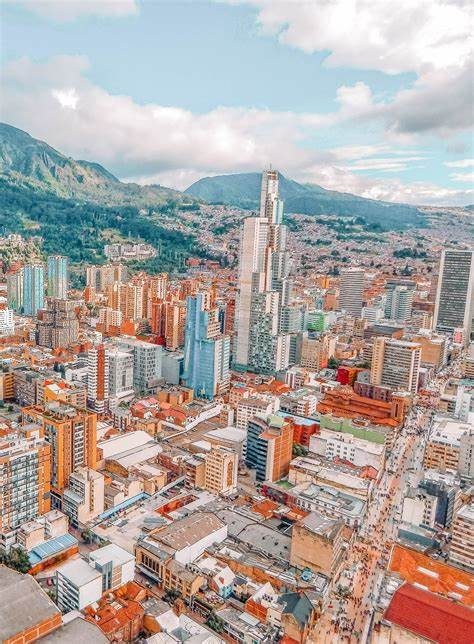

Culture

South American Culture draws on diverse traditions, reflecting the cotinent's rich history and multicultural Influences.
Colonization brought a lot of Spanish and Portugese tradition
The primary languages are Spanish and Portugese
The main religion is Roman Catholic and Protestants are significant in French Guiana